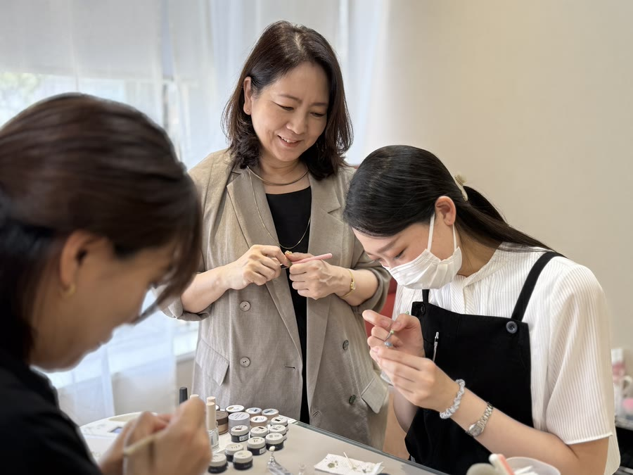
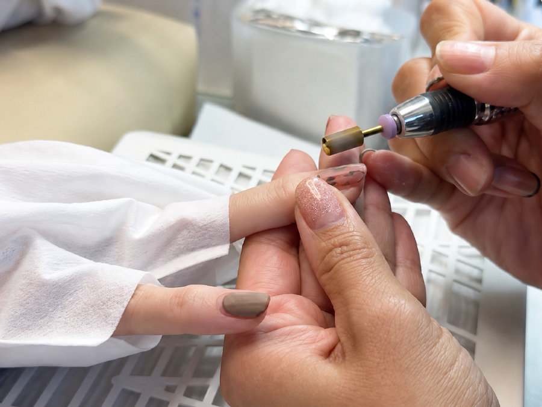
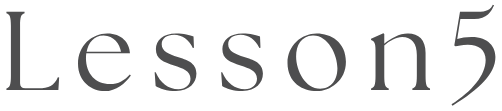

実践的な学びで
選ばれるネイリストへ
代表の実績
経営歴
0年
ネイルサロン経営
0店舗
美容サロンオーナーを支援
0名
スクール卒業生
ネイリスト育成 0名+
ネイリスト育成 0名+
好きなコトを仕事にする夢を
あきらめますか？
あきらめますか？
-
資格は取った。けれど、
技術に自信はない。 - 接客の正解が分からず不安。
- 若い子の中で学ぶことに抵抗がある。
-
アートをセンスのせいにして
学んでこなかった。 -
人の手に施術すると
時間がかかりすぎる。 -
今のサロンでは成長できず
疲弊するだけ。
が選ばれる、
3つの理由


現役のネイリストから
そのまま使える
実践力を直接吸収
| レッスン | 内容と到達目標 |
|---|---|
| オリエンテーションと現状整理受講目的を明確にし、苦手の原因を可視化する | |
| 爪・皮膚の解剖学とトラブル回避構造を理解し、時間をかけすぎず持ちを長くする土台をつくる | |
| ジェル塗り基礎とアペックスバランス正しい塗り方と、美しく見える構造を意図的に作る | |
| ワンカラーで魅了するムラ・キワ・ツヤ・光の反射を極める | |
 | ニュアンス基礎技法“なんか微妙”を防ぐ、再現性を身につける |
| ニュアンス応用技法“それっぽい”から抜け出し、抜け感ある構図を作る | |
| 骨格・筋肉・神経とワークフロー負担をかけない手の扱いと、ネイリストの職業病予防 | |
| アートジェルネイル技法の引き出しを増やし、ワンパターン化を防ぐ | |
| ホスピタリティ“またお願いしたい”を生む接客・カウンセリング設計 | |
| これからのネイルサロン動向健康志向・ミドル/シニア層の広がりと市場ニーズを掴む | |
| 進路設計（独立開業・サロン就職）卒業2ヶ月以内の計画策定と、高単価メニューの実現 | |
| 最終課題・デザイン構成と見せ方完成度に加え“垢抜け”を整え、制作意図まで発表する |
『感覚』ではなく
『再現』を学ぶ
代表
「好き」を、
これからの人生の力に。
よくあるご質問
サロン経験は必要ありません。
ネイリスト検定2級
または、検定なしで
ブランクは問題ありません。
スマートフォンだけで参加できます。
合計4か月間で希望のネイリストとしての
このスクールが扱うのは、
無料個別相談に参加されたからと言って